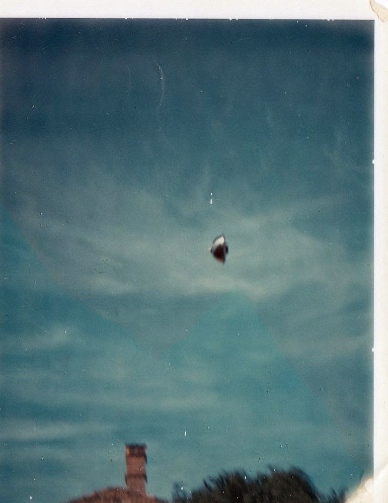
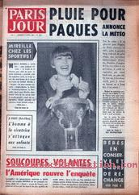

Le phénomène filmé à travers le hublot d'un avion
Dans le Staffordshire (Angleterre) Thomas Oldfield et sa femme prennent un avion de ligne
pour la 1ʳᵉ fois. Par le hublot, il voit un ovni apparaître, qu'il filme en 8mm, avant que ce dernier ne réduise sa
forme jusqu'à disparaître. La BBC reproduira le phénomène qui n'est qu'une déformation optique d'une extrêmité de
l'aile de l'avion "1966: Tomorrow's World: UFO", BBC
Archive, 2018-04-21.
À Balwyn (Victoria)

dans la banlieue de Melbourne (Australie), un homme d'affaires prend la photo ci-contre.
Il raconte que l'objet était brillant et qu'il planait à environ 40 m du sol. De quasi-stationnaire, l'objet
disparu alors à grande vitesse vers le nord. La VFSRS de Moorabbin (Australie) étudie la photo et l'environnement et conclut que la photo ne monre aucun
signe d'exposition multiple, de montage ou autre trucage. Tourefois le Dr. B Roy Frieden (professeur d'optique à
l'Université d'Arizona, consultant pour l'APRO) détecte une ligne pointillée à travers le centre de la photo, à
travers le champ de nuages, ce qui suggère qu'il s'agit en fait de 2 photos jointes re-photographiées pour n'en
sembler qu'une seule.
A Saint-Arnaud (Australie), Ronald Sullivan conduit sur une longue route droite à 14 km à l'est de Bealiba, dans l'état
de Victoria, lorsque les faisceaux de ses phares sont aussi soudainement qu'inexplicablement déportés vers la droite
— comme s'ils étaient devenus des sortes de tuyaux solides, mais malléables. Etonné et fort inquiet, le témoin
s'arrête dans un crissement de pneus et assiste alors à un manège de lumières colorées s'approchant de la route
depuis un champ voisin. Un objet s'élève alors depuis ce champ et disparaît. Avant de narrer l'événement à la
police, le témoin fait vérifier ses phares : ils fonctionnent à la perfection. Lorsque la police enquête sur les
lieux, elle découvre dans le champ une excavation circulaire d'environ 1,50 m de diamètre et de 12,50 cm de
profondeur maximum. Sullivan déclara ne pas croire aux ovnis.
Observation à Alto (Tennessee)Cas Blue Book n° 10 384 non résolu.

Paris Jour n° 2043 du 8, avec un article intitulé Soucoupes volantes : l'Amérique
rouvre l'enquête
Observation à Lycoming (New York)Cas Blue Book n° 10 385 non résolu.
Le secrétaire d'État Harold Brown propose la création d'un organisme civil (qui
sera la Commission Condon, représentée par une université indépendante)
menant une étude scientifique des ovnis et autorise les scientifiques à consulter les dossiers de l'USAF sur le
sujet.
Par une journée fraîche, mais ensoleillée, au lycée Westall
aujourd'hui Collège Secondaire de Westall, sur Rosebank Avenue dans le sud de Clayton (Australie), de nombreux élèves et des membres sur personnel voient une soucoupe
volante survoler l'école puis descendre dans un enclos tout près. L'enclos est adjacent à un bosquet de pins, dans
une zone connue comme La Grange aujourd'hui une réserve naturelle. Peu après, près de 5
appareils légers apparaissent, prenant en chasse l'ovni alors qu'il grimpe rapidement et s'éloigne, pour une plus
être revu. La provenance des appareils légers ne sera jamais déterminée. Peu après, 1 à 3 empreintes circulaires
sont vues par les témoins dans l'herbe de l'enclos. Par la suite, des hommes en uniforme, supposés être de la police
ou de l'armée Armée de l'air, selon certains témoignages, sont vus assister à la scène.
Après avoir pris diverses mesures, certains rapporteront que l'enclos a alors été brûlé ou retourné par ces hommes
en uniformes. Des témoins diront que ces gens leur ont parlé ou rendu visite par la suite. Certains diront que les
élèves comme le personnel du lycée reçurent l'ordre de ne pas parler de l'incident, alors que des élèves diront
avoir été sanctionnés pour en avoir parlé. Il sera estimé qu'environ 200 personnes auraient assisté à ces événements
en ce jour d'automne à la bordure sud-est de Melbourne, y compris des gens de l'Ecole d'Etat de Westall voisine
"Westall
High School 1966 UFO incident", Yahoo Groups.
Cas de la chasse de Spaur à Ravenna (Ohio).
A Beverly (Massachusetts), plusieurs personnes
observent 3 objets lumineux tournant en cercle dans le ciel. Une femme ayant fait des signes de la main, l'un
des ovnis s'approche à courte distance : L'objet, en se rapprochant, paraissait de plus en plus grand...
Au-dessus de ma tête, je ne voyais rien d'autre, dans le flou de l'atmosphère, que des lumières émettant à
intervalles des signaux très brillants (ce n'étaient pas des clignotements). J'étais très excité - mais pas
effrayé — et très curieux. Si l'objet ne s'était pas rapproché, je ne me serais pas enfui, mais j'ai pensé
qu'il allait s'écraser sur moi. Un autre témoin s'enfuit : j'ai commencé à courir. Alors un ami m'a
crié 'Regarde, c'est juste au-dessus de nous !' — J'ai levé les yeux, et je suis resté figé sur place. C'était
exactement comme le dessous d'une assiette. C'était solide... Je n'ai pas entendu de bruit, mais j'ai cru que
cette chose allait me tomber dessus (...). J'étais fasciné, ahuri, incapable de réfléchir, et je me
suis retrouvé en train de courir pour lui échapper"Beverly, MA - April 22, 1966", in "Historical Cases", MUFON.
Après que les témoins ont appellé la police, 2 policiers vont profiter du
spectacle. L'un d'eux témoigne : sur ordre du commissariat, je me suis rendu (...) à la Beverly High
School, dans Salem Road, où l'on signalait un ovni. À mon arrivée, j'ai observé ce qui me parut ressembler à
une grande assiette planant au-dessus des bâtiments scolaires. Il y avait 3 lumières — rouge, verte et blanche
— mais aucun bruit qui aurait pu indiquer qu'il s'agissait d'un avion. Cet objet planait au-dessus de l'école
et a paru quasiment s'immobiliser. Les lumières brillaient par éclairs. L'objet survola l'école à 2 reprises
puis s'éloigna. La télévision était brouillée pendant l'observation.
William Haydon Burns, gouverneur de Floride en campagne pour sa
réélection décolle d'Orlando pour Tallahassee (capitale d'état). À bord du Convair, le
co-pilote Herb Bates repère 2 globes d'un jaune brillant, côte à côte. À 6000 pieds d'altitude, près de Ocala (nord
de la Floride), Burns sort de la cabine de pilotage et annonce : Nous avons un ovni à côté. Je vais demander au
pilote de se diriger vers lui. Frank Stockton, le secrétaire adjoint, le capitaine Nathan Sharron de la
patrouille autoroutière d'état et l'ensemble des journalistes à bord peuvent alors voir le phénomène à tribord.
Certains décriront 2 lumières brillantes en forme de croissant, avec une section plus faible, comme une colonne de
lumière, entre eux. Les lumières jaune orangé varient en luminosité, mais restent très distinctes. Lorsque
l'appareil se dirige vers l'ovni, celui-ci s'élève alors rapidement, et disparait après avoir accompagné l'avion sur
40 miles. Duane Bradford, directeur du bureau au Capitol de la Tamp Tribune, déclarera : J'ai commencé à penser
que ces histoires d'ovnis n'étaient pas si rigolotes que cela. Bill Mansfield, directeur du bureau central du
Miami Herald, déclarera quant à lui : Il y avait bien quelque chose. Quelque chose que nous avons tous vu
clairement. Quelque chose qu'il reste toujours à expliquer. Le gouverneur (qui avait déjà vu un ovni
auparavant d'après un documentaire diffusé sur une télévision de Miami en octobre de l'année précédente) confirmera
l'observation, mais ne voudra pas en dire davantage Bulletin du
NICAP, 1966-05/06.